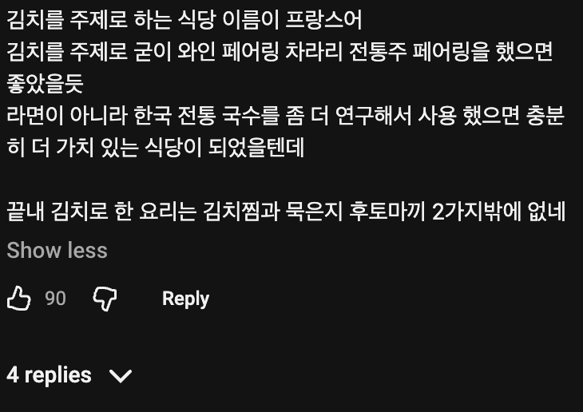

나도 15만원주면 저렇게해줄수잇어
지점이 2개던데 돈이 되니깐 확장한건가? 뭐지 ㄷㄷ
맛은 있을 거 같은데 걍 같은 돈이면 보쌈김치를 배 찢어질 정도로 먹을 수 있어서
한녀 허영심 마케팅은 돈이 된다 ㅋㅋㅋㅋ
뭐하는 가게인지 진짜 모르겠네, 무슨 흑백요리사에 나올것 같은 할머니 사진 크게 박아 뒀길래 유명한 사람인가 했더니
그냥 사장님사진이었고, 내부 인테리어는 무슨 싸구려 웨딩 쇼룸에다가 상만 펼쳐놓은 느낌임임.
나는 저 가격대 식당 의자에 돌돌이 달린건 첨보는듯? 파는 메뉴도 전국 미식이라면서 오만거 다 팜.
모듬회에 낚지 볶음. 모듬 전, 꼬막 비빔밥, 카프리제 샐러드 차라리 김치 오마카세 할거면 김치요리에 집중하는게 맞지 않나?
이름은 원래 담금소였다가 얼마전에 바꾼거 같은데 전에 이름이 나은듯 ㅋㅋㅋㅋㅋㅋㅋㅋ
찾아간 놈 꼬라지랑 나레이션에서 묻어나오는 말투만 봐도 대충 각 나오지 ㅋㅋㅋ 저런 애들이 저런 곳 찾아다니는 거임
15만원짜리 레스토랑에서 다이소에서 팔법한 파랑색 보라색 가위로 김치 잘라주는데서 디테일이나 미감이 없다는 느낌이 바로 오네
짜파게티는ㅋㅋ
근데 내가 가장 충격 먹었던 한식중에 하나는 오이소백이임. 거기서 거기지라는 음식중에 아웃스텐딩이 나오면 진짜 충격적이긴 하더라. 근데 저기가 그정도 일지는..
만오천원
이거 진짜에요?
김치종류도 몇개 안되는데 15만원은 ㅋㅋ
맛은 있을 거 같은데 엄..
저렇게 고춧가루 뻑뻑하게 묻은 겉절이 싫어
칼국수나 수제비면 이해하겠는데 짜파게티는 진짜 좀ㅋㅋ
다이닝 겉멋에 이상한게 탄생해버렸내
김치는 전라도여. 전라도 김치 먹어라
아 솔직히 낭비같지만 김치 상태가 좋다면 한번쯤은 가보고 싶다.
함바집이네
소신발언한다 나는 괜찮아보인다
김치가 메인이 아닌 거 같은데..?
그냥 비싼 한정식집 가는게 낫겠다...
인당 15만원 한정식이면 소고기 회 기본이고 별에별거 다주는데
수원이랑 압구정에 매장이 있는거 보면 돈은 많나 보네 ㄷㄷ 근데 김치는 색깔도 제대로인게 맛있어보이네
보면서 계속 컨셉영상인가? 아니 진짜인가? 하네ㅋㅋㅋ
음식점도 바이럴로 한탕하고 나르는 경우가 있나?
왠지 모르게 영상 보면서 그런 생각이 드네..
여기 반응만 봐도 한식으로 성공하는게 어려운게 보이네. 가성비가 좋다고는 못하겠지만 가격 내에서 적절히 구성한거 같은데...
발효도 다 안 하는데 왜 김치라고 함?
겉절이는 김치 아니냐
이거 매국노네
난 최소 한달이라도 숙성해야 김치라고 불러줌. 속에 맛이 안 나잖아
하고 싶은 말 다 써있네
하다못해 라면이라도 직접 만든 면 요리로 구성하던가
그냥 기성품 라면을 끓여오냐 ㅋㅋㅋ
그리고 매일 새로 만든 김치면 겉절이일텐데 김치 오마카세라면서 겉절이가 메인인 게 제일 이상함
김치말이국수 어디갔냐
진짜 지랄 컨셉으로 찍은 예능 유튜브지?
진짜 김치 애호가로서
8도 지방의 각 대표 김치들 나올 줄 알고 기대했는데
서거리김치 갈치김치 이런 매니악한 김치 종류별로 나올 줄 알고 기대했는데
브로콜리 김치 감귤김치 이런 특이한 메뉴 나올 줄 알고 기대했는데
저딴게 15만원
일단 김치 자체가 엄마손맛 미만잡이 되기 때문에 한국인이 가면 어...음... 할 확률이 높아지는건 어쩔 수 없다고 생각함
그걸 이길 방법은 존나 양념 때려박아서 첫입에 폭발시키는건데
이러면 두번째 젓가락질부터 힘들어질테고
ㅋㅋㅋㅋㅋㅋㅋ